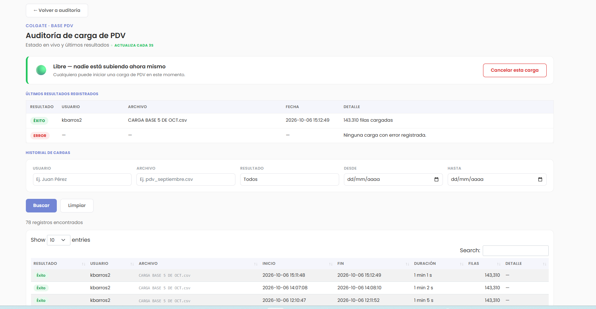
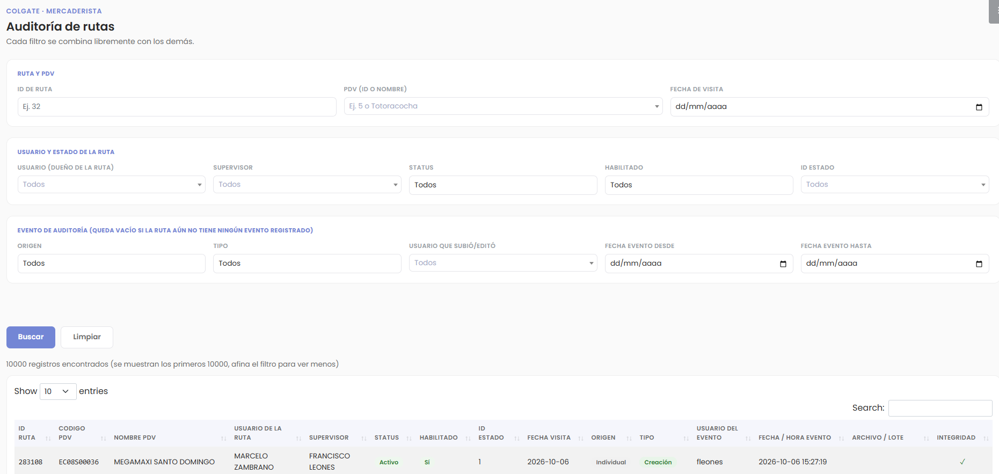

Auditoría de PDV y Rutas
Cada carga de la base y cada cambio en una ruta queda registrado: quién lo hizo, cuándo y desde qué archivo.
Estado en vivo
Trazabilidad por ruta


Cada Cambio Queda con Responsable
Cargas y rutas con estado en vivo, historial y datos verificados.
Desarrollado por Grupo Lucky · © Grupo Lucky & Colgate 2026
Carga en vivo
Quién sube, lote actual, avance y tiempo estimado, cada 3 segundos.
Una carga a la vez
Evita que dos cargas se pisen y deja la base consistente.
Nunca queda trabado
Se libera solo a los 30 minutos, o al instante con Cancelar.
Historial de cargas
Usuario, archivo, duración, filas y resultado de cada carga.
Errores explicados
Último error con su lote y mensaje, para corregir rápido.
Cada ruta, con responsable
Creación, edición o eliminación, con usuario, fecha y archivo.
Filtros combinables
Se cruzan ruta, PDV, usuario, supervisor, estado y fechas.
Integridad verificada
Alerta si el PDV, el usuario o el supervisor ya no existen.